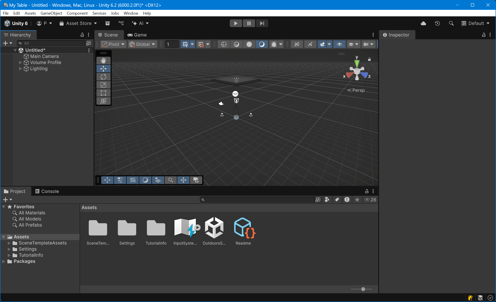

Installing VPE
Unity
In order to start creating or modifying tables with VPE, the first thing you'll need to do is install Unity. You will need a Unity developer account, which is free.
Note
As long as you don't use Unity for a game that makes $200K or more in revenue or funding a year, the free Personal plan is sufficient for you.
Unity uses an application called Unity Hub to update itself, create new projects and provide quick access to them. The install process is straight-forward and documented here if you run into troubles.
Unity 6.2 is the recommended Unity version at the moment.
You can leave all the other options unchecked during install.
Once Unity is downloaded and installed, you're ready to create a new VPE project. Click on New Project, be sure to have selected the 6.2 version at the top, and you'll see the following choices:

The relevant options for VPE are:
- Universal 3D - Unity's URP is aimed at mobile and low-end platforms.
- High Definition 3D - Unity's HDRP used for high-end platforms.
We recommend using HDRP. It's what we're using when developing and should be the most stable pipeline. Alternatively if you're on a laptop don't have a beefy GPU, use the URP. The built-in renderer is legacy not recommended.
Next, enter a project name and a location for your project. Clicking Create project launches the Unity editor, pulls in all the dependencies for the new project, and compiles them. This will take a few minutes.
HDRP Setup
Once the editor has opened you can click away the HDRP Wizard that opens. You should now see an empty scene:
Click on File -> New Scene and select the Basic Indoors (HDRP) template. Save it in your Assets/Scenes folder as MyTable.unity.
In this scene, there are already some objects we don't need. In the Hierarchy, select the Geometry game object and delete it by pressing DEL. Your scene should now look like this:

Hit Ctrl+S to save your scene.
VPE Package
Now that you have your project and scene set up, let's bring in the VPE libraries. VPE ships as a package that you can install using the Package Manager inside of Unity directly. However, since Unity's package registry is only used for official Unity content, we need to add our own registry first.
To do that, go to Edit -> Project Settings, and select the Package Manager panel on the left. Under Scoped Registries, add the following:
- Name:
Visual Pinball Engine - URL:
https://registry.visualpinball.org/ - Scope(s):
org.visualpinball - Scope(s):
com.bartofzo
Also check Enable Pre-release Packages (and confirm), as well as Show dependencies. Your settings page should now look like this:

Hit Save and close the window. Now you'll add VPE's HDRP package, which will automatically pull in the core package and the assets package.
Open the package manager by clicking on Window -> Package Management -> Package Manager. Then click on the "plus" icon on the top left corner of the window, and choose Add package by name...

There, enter org.visualpinball.engine.unity.hdrp and click Install. This will take a moment as Unity downloads and compiles all of VPE's dependencies and parses all the assets that we ship in our library.
Warning
Our patcher, which is currently part of the main package, depends on the PinMAME package. Until we move the patcher into a separate package, you will have to install the PinMAME package as well. To do that, click on the plus button again and enter org.visualpinball.engine.pinmame, then click on Add.
When complete, you should now have a Pinball menu in the editor, and you should see the following new packages in the package manager (version numbers will vary):

Now that VPE is installed let's import a table!